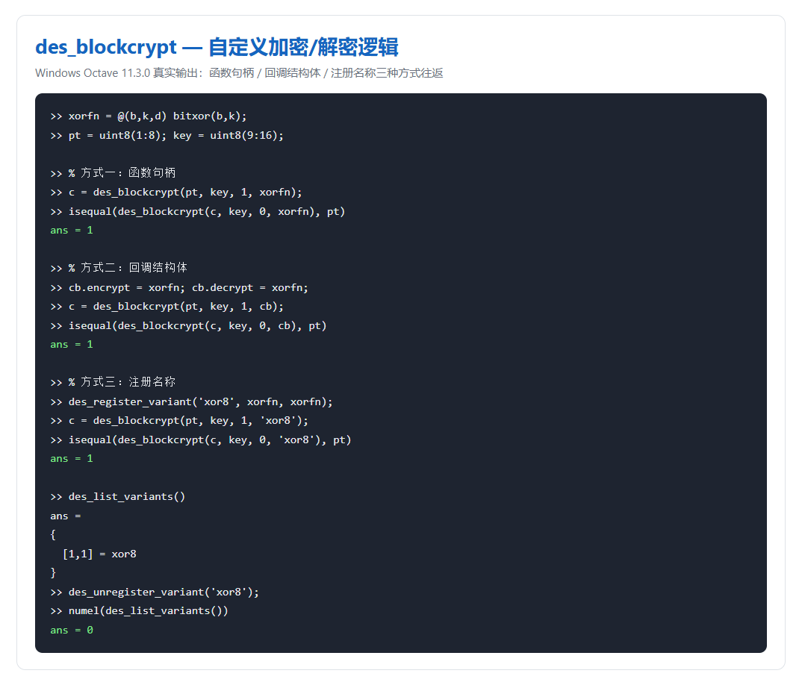
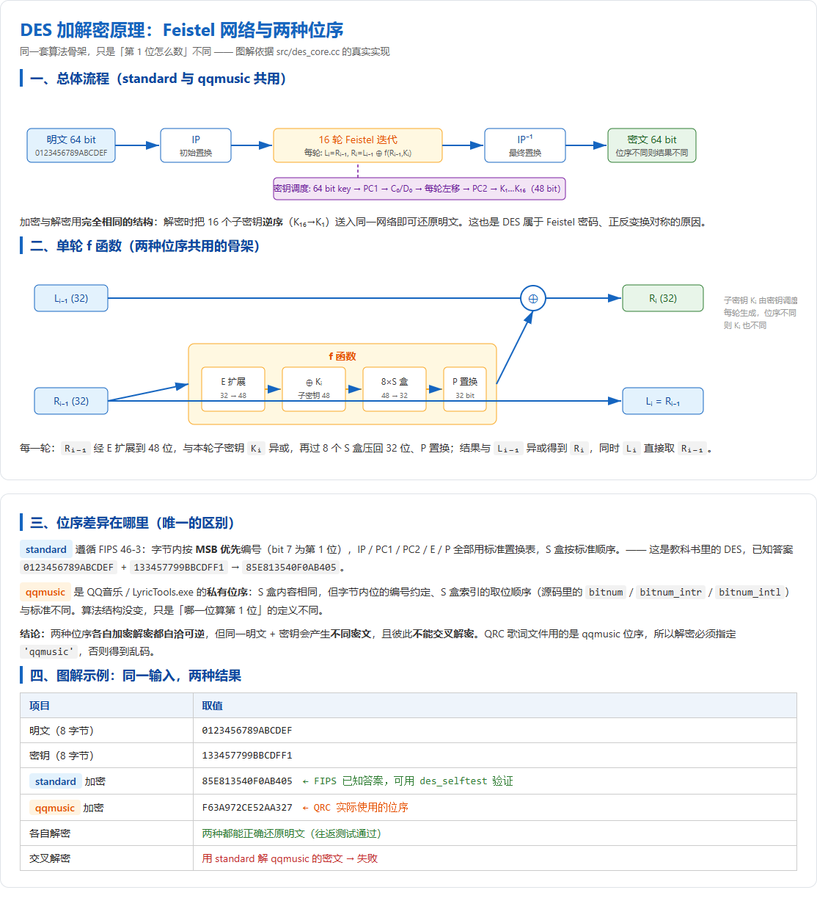
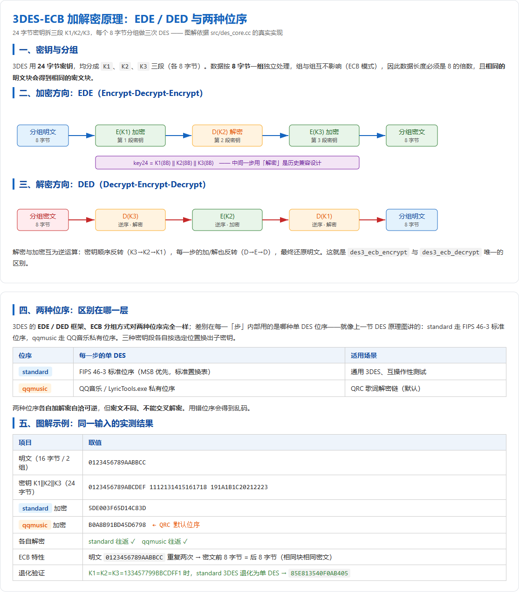
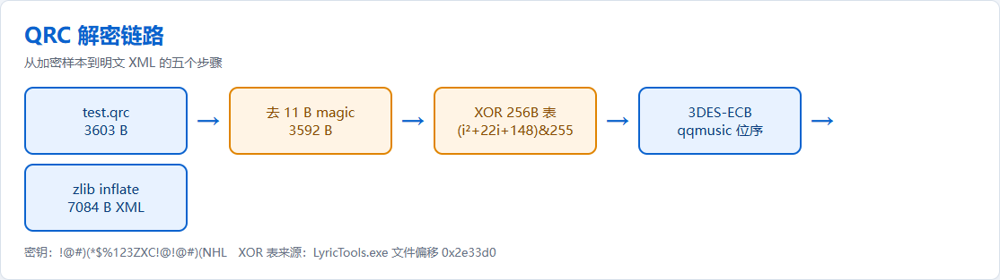
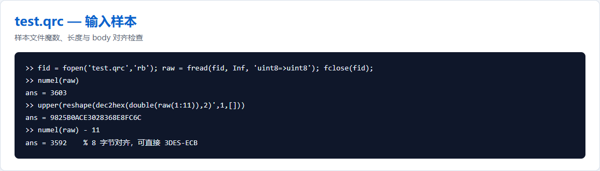
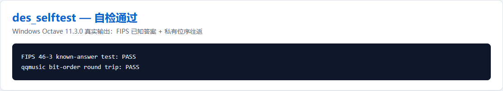
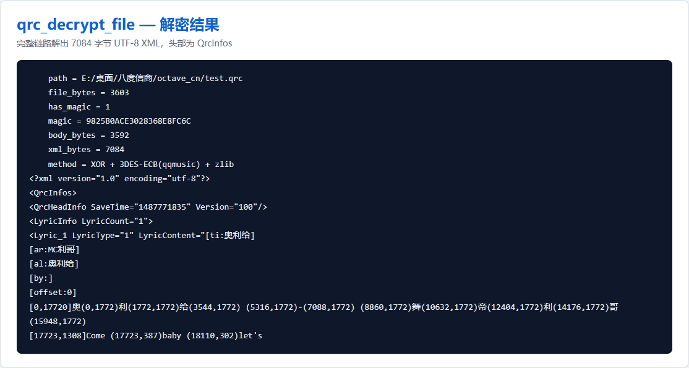

本包可通过 Octave 软件源安装：
>> pkg install -forge octave_data_encryption_standard
>> pkg install 'https://github.com/CNOCTAVE/octave_data_encryption_standard/releases/download/1.0.0/octave_data_encryption_standard.tar.gz'
>> pkg install octave_data_encryption_standard.tar.gz -local
>> pkg load octave_data_encryption_standard
Linux / macOS：需要 mkoctfile 与 zlib 开发包（Fedora:
dnf install zlib-devel；Debian/Ubuntu: apt install zlib1g-dev）。
Windows：Octave 自带的 mkoctfile 与 libz.dll.a 即可编译。
下列每个函数均按「调用方法 → 含义 → 示例」说明。使用前先执行
pkg load octave_data_encryption_standard。所有数据用 uint8 向量，[ ] 的参数可省略。
调用方法 des_selftest ()
含义 跑两项独立检查并打印结果：① FIPS 46-3 已知答案测试（明文 0123456789ABCDEF、密钥
133457799BBCDFF1，应得密文 85E813540F0AB405）；② qqmusic 私有位序下 8
字节分组的加解密往返。两项都通过才算成功，否则函数报错。安装后先跑它，确认 .oct 编译与位序都正常。无返回值。
示例
>> des_selftest() FIPS 46-3 known-answer test: PASS qqmusic bit-order round trip: PASS
调用方法 out = des_blockcrypt (block, key, direction, variant) 或 out = des_blockcrypt (block, key, direction, variant, custom)
含义 加密或解密单个 8 字节分组。block、key 均为 8 字节
uint8；direction 取 1/'encrypt'（加密）或
0/'decrypt'（解密）；variant 取 'standard'（FIPS 46-3）或
'qqmusic'（LyricTools.exe 私有位序），默认 'standard'。variant
还可直接给函数句柄、回调结构体或已注册名称，第五参数 custom 会覆盖 variant——详见下面「自定义加密/解密逻辑」小节。自定义回调必须返回 8
字节且值在 [0,255]。
示例
>> h = @(s) uint8(hex2dec(reshape(s,2,[])')');
>> pt = h('0123456789ABCDEF'); key = h('133457799BBCDFF1');
>> ct = des_blockcrypt(pt, key, 1, 'standard');
>> dec2hex(double(ct))
ans = 85E813540F0AB405
>> isequal(des_blockcrypt(ct, key, 0, 'standard'), pt)
ans = 1
调用方法 out = des3_ecb_encrypt (data, key24, variant) / out = des3_ecb_decrypt (data, key24, variant)
含义 3DES-ECB 加密 / 解密整段数据。data 是 uint8 向量，长度必须是 8
的倍数（ECB 按 8 字节分组，不做填充，不足请自行补位）；key24 是 24 字节密钥（三段 8 字节 K1/K2/K3）；variant
默认 'qqmusic'（QRC 用的私有位序），传 'standard' 走 FIPS。加密解密必须用同一个 variant。
示例
>> key24 = uint8(1:24); data = uint8(0:15); % 16 字节，8 的倍数 >> c = des3_ecb_encrypt(data, key24, 'qqmusic'); >> numel(c) ans = 16 >> isequal(des3_ecb_decrypt(c, key24, 'qqmusic'), data) ans = 1
调用方法 [xml, info] = qrc_decrypt_file (path)
含义 解密 LyricTools.exe 产生的 .qrc 文件，返回 UTF-8 XML 字符串 xml
和诊断结构体 info。完整链路：11 字节 magic 校验 → 256 字节 XOR 前置混淆 → 私有位序 3DES-ECB 解密 → zlib
inflate。info
字段：path、file_bytes（文件总字节数）、has_magic（magic
是否匹配）、magic（十六进制串）、body_bytes（去 magic
后的长度）、xml_bytes（解压后长度）、method。magic 不匹配时返回空 xml 而不报错，可据
has_magic 判断。
示例
>> [xml, info] = qrc_decrypt_file('test.qrc');
>> info.xml_bytes
ans = 7084
>> info.has_magic
ans = 1
>> info.method
ans = XOR + 3DES-ECB(qqmusic) + zlib
调用方法 result = qrc_decrypt_example (path)
含义 QRC 解密的最小可复制演示，内部就是调 qrc_decrypt_file。返回结构体
result：result.info（同上）、result.preview（XML 前 160
字符）、result.has_qrc_header（是否含 <QrcInfos> 标记）。适合快速确认一份 .qrc 是否解对。
示例
>> r = qrc_decrypt_example('test.qrc');
>> r.has_qrc_header
ans = 1
>> r.preview
ans = <?xml version="1.0" encoding="utf-8"?>
<QrcInfos>
<QrcHeadIn ...
调用方法 out = qrc_xor_pre (data)
含义 单独暴露 QRC 解密链的第一层——256 字节 XOR 前置混淆，便于分步调试。data 是任意长度
uint8 向量，返回等长结果。混淆表位于 LyricTools.exe 偏移 0x2e33d0，索引公式
(i² + 22i + 148) & 255。通常不需要直接调用——qrc_decrypt_file 已包含这一步；只有在逐层验证解密链时才用它。
示例
>> out = qrc_xor_pre(uint8(0:10)); >> dec2hex(double(out)) ans = 629E590A04C658922B9619
调用方法 des_register_variant (name, encrypt_fn, decrypt_fn) / des_unregister_variant (name) / names = des_list_variants ()
含义 把自定义加解密函数注册成具名变体，之后在 des_blockcrypt
里用名字引用。encrypt_fn、decrypt_fn 必须是函数句柄，签名统一
out = fn (block, key, direction)，返回 8 字节。des_register_variant
注册（同名覆盖），des_unregister_variant 注销，des_list_variants 返回已注册名称的 cell
数组。注册值是会话内有效的，不写盘。详细用法与另两种方式（直接传句柄、回调结构体）见下面「自定义加密/解密逻辑」小节。
示例
>> xorfn = @(b,k,d) bitxor(b,k);
>> des_register_variant('xor8', xorfn, xorfn);
>> des_list_variants()
ans =
{
[1,1] = xor8
}
>> c = des_blockcrypt(uint8(1:8), uint8(9:16), 1, 'xor8');
>> des_unregister_variant('xor8');
>> des_list_variants()
ans = {}
des_blockcrypt_core (block, key, direction, variant)、des3_ecb_crypt (data, key24, direction, variant)、qrc_raw_decrypt (path)
是 des_core.oct 里的底层实现，des_init 负责用 autoload 注册它们。公开 wrapper
已封装参数校验与默认值，通常直接用上面的 1～7 即可；只有在自己写上层封装时才需要碰这些。
des_blockcrypt (block, key, direction, variant, custom) 的 variant 除了 "standard" /
"qqmusic"，还可以直接给函数句柄、回调结构体，或用 des_register_variant (name, encrypt_fn, decrypt_fn) 注册的名字。回调签名统一为
out = fn (block, key, direction)，必须返回 8 字节。
回调结构体可分别给 encrypt 与 decrypt，也可只给一个 apply
同时处理两个方向。可选第五参数 custom 会覆盖
variant。配套函数：des_register_variant、des_unregister_variant、des_list_variants。
>> xorfn = @(b,k,d) bitxor(b,k);
>> c = des_blockcrypt(pt, key, 1, xorfn);
>> back = des_blockcrypt(c, key, 0, xorfn);
>> isequal(back, pt)
ans = 1
>> des_register_variant('xor8', xorfn, xorfn);
>> c = des_blockcrypt(pt, key, 1, 'xor8');

算法骨架相同，只有「哪一位算第 1 位」的定义不同。standard 与 qqmusic 都走 Feistel 网络、16 轮迭代、E 扩展 → S 盒 → P 置换、同一套密钥调度——差别只在字节内位的编号约定与 S 盒取位顺序。下面这张图把两套位序共用的结构、唯一的区别、以及同一输入的实测结果放在一起对照。

① 加解密同构。加密与解密用同一个 Feistel 网络，唯一区别是子密钥顺序：加密按 K₁→K₁₆，解密按
K₁₆→K₁ 逆序送入。所以 des_blockcrypt 只需一个 direction 参数切换方向，底层是同一套轮函数。
② 每轮做什么。把 64 位明文经 IP 初始置换拆成左右各 32 位 L、R；每轮
Lᵢ = Rᵢ₋₁、Rᵢ = Lᵢ₋₁ ⊕ f(Rᵢ₋₁, Kᵢ)。f 函数把 32 位 R 经 E 扩展到 48 位，与本轮子密钥异或，过 8 个 S 盒压回
32 位，再 P 置换。16 轮后交换左右、经 IP⁻¹ 得到密文。
③ standard 位序。FIPS 46-3 标准：字节内 MSB 优先编号（bit 7 为第 1 位），IP / PC1 / PC2 / E / P
全用标准置换表，S 盒按标准顺序。这是教科书里的 DES，可用 des_selftest() 的已知答案验证。
④ qqmusic 私有位序。QQ音乐 / LyricTools.exe 的方案：S 盒内容不变，但字节内位编号约定、S 盒索引的取位顺序（源码里的
bitnum / bitnum_intr / bitnum_intl）与标准不同。结构没变，只是「第 1 位」的定义不同。
⑤ 后果。两种位序各自加解密都自洽可逆，但同一明文 + 密钥产生不同密文，且不能交叉解密。QRC
歌词用的是 qqmusic 位序，解 QRC 必须指定 'qqmusic'——这也是解密链里最容易踩错的一步。
>> h = @(s) uint8(hex2dec(reshape(s,2,[])')');
>> pt = h('0123456789ABCDEF'); key = h('133457799BBCDFF1');
>> cs = des_blockcrypt(pt, key, 1, 'standard');
>> cq = des_blockcrypt(pt, key, 1, 'qqmusic');
>> [dec2hex(double(cs)); dec2hex(double(cq))]
ans = 85E813540F0AB405 ← standard（FIPS 已知答案）
F63A972CE52AA327 ← qqmusic（QRC 实际位序）
>> isequal(des_blockcrypt(cs,key,0,'standard'), pt) % 各自解密都还原
ans = 1
>> isequal(des_blockcrypt(cq,key,0,'qqmusic'), pt)
ans = 1
>> isequal(cs, cq) % 两种位序密文不同
ans = 0
图中四个数字与本例逐字对应：85E813540F0AB405 是标准位序已知答案，F63A972CE52AA327
是私有位序结果，二者密文不同但都能正确解回原文。
3DES 是三次 DES 的组合，密钥 24 字节拆成 K1、K2、K3 三段（各 8
字节）。ECB 模式下每个 8 字节分组独立处理。standard 与 qqmusic 的差别只在「每一步内部用哪种单 DES 位序」——上一节的位序原理在这里照样适用。

① 加密 EDE。每个分组依次 E(K1) → D(K2) → E(K3)——加密、解密、再加密。中间一步用解密是为了向后兼容早期的单次
DES（当 K1=K2=K3 时，EDE 就退化为一次单 DES）。
② 解密 DED。解密是加密的逆：密钥顺序反转、每步加解反转，即 D(K3) → E(K2) → D(K1)，还原明文。这就是
des3_ecb_encrypt 与 des3_ecb_decrypt 唯一的区别。
③ ECB 分组。数据按 8 字节切块，各块独立加密，data 长度必须是 8
的倍数，函数不做填充。相同明文块得到相同密文块——这是 ECB 的固有特征，图解示例里用重复分组做了演示。
④ 两种位序。EDE/DED 框架和 ECB 分组方式两种位序完全一样；区别只在单 DES 那一步：'standard' 用 FIPS
46-3 标准位序，'qqmusic'（默认）用 QQ音乐私有位序。两种各自可逆、密文不同、不能交叉解密，QRC 解密链必须用 'qqmusic'。
>> h = @(s) uint8(hex2dec(reshape(s,2,[])')');
>> pt = h('0123456789AABBCC'); % 16 字节，2 个分组
>> k24 = [h('0123456789ABCDEF') h('1112131415161718') h('191A1B1C20212223')];
>> cs = des3_ecb_encrypt(pt, k24, 'standard');
>> cq = des3_ecb_encrypt(pt, k24, 'qqmusic');
>> dec2hex(double(cs))
ans = 5DE003F65D14C83D
>> dec2hex(double(cq))
ans = B0A8B91BD45D6798
>> isequal(des3_ecb_decrypt(cs, k24, 'standard'), pt) % 各自解密都还原
ans = 1
>> isequal(des3_ecb_decrypt(cq, k24, 'qqmusic'), pt)
ans = 1
>> isequal(cs, cq) % 两种位序密文不同
ans = 0
两个额外验证（也写进了图解）：把明文重复成 0123456789AABBCC0123456789AABBCC，密文前 8 字节等于后 8 字节，印证
ECB；把密钥三段都设成 133457799BBCDFF1，standard 3DES 退化为单 DES，得到 85E813540F0AB405——与上节单
DES 已知答案一致。
LyricTools.exe 产生的 test.qrc 是一份本地加密歌词文件。经逆向与实测，完整链路如下：
11 字节 magic 98 25 b0 ac e3 02 83 68 e8 fc 6c
→ 256 字节 XOR 前置混淆（表位于 exe 偏移 0x2e33d0，索引 (i²+22i+148)&255）
→ 私有位序 3DES-ECB 解密（24 字节密钥 !@#)(*$%123ZXC!@!@#)(NHL）
→ zlib inflate → UTF-8 XML。
样本文件：test.qrc 共 3603 字节，去掉 magic 后 body 为 3592 字节（8 字节对齐）；解密后 XML 为 7084
字节，以 <?xml version="1.0" encoding="utf-8"?><QrcInfos> 开头。


>> pkg load octave_data_encryption_standard
>> des_selftest()
FIPS 46-3 known-answer test: PASS
qqmusic bit-order round trip: PASS
>> [xml, info] = qrc_decrypt_file('test.qrc');
>> info.xml_bytes
ans = 7084
>> disp(xml(1:80))

